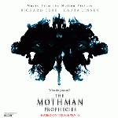

| Artist: | Original Soundtrack |
| Title: | The Mothman Prophecies |
| Label: | Colosseum CST 8087-2.2 |
| Length(s): | 45+59 minutes |
| Year(s) of release: | 2001 |
| Month of review: | [06/2002] |
| 1) | Half Light (single) | 4.23 |
| 2) | Wake Up #37 | 5.38 |
| 3) | Haunted | 5.03 |
| 4) | One And Only | 1.59 |
| 5) | Collage | 1.06 |
| 6) | Great Spaces | 5.19 |
| 7) | Rolling Under | 5.27 |
| 8) | Half Life | 4.14 |
| 9) | Soul Systems Burn | 5.35 |
| 10) | Half Light (tail Credit) | 6.46 |
Disc 2:
| 1) | Movement 1 | 8.04 |
| 2) | Movement 2 | 7.32 |
| 3) | Movement 3 | 9.54 |
| 4) | Movement 4 | 7.34 |
| 5) | Movement 5 | 4.26 |
| 6) | Movement 6 | 3.50 |
| 8) | Movement 8 | 9.40 |
Next up is Wake Up #37, which is like the two following tracks a King Black Acid track. A slow easy-going beat with the, for King Black Acid, typical high pitched bleeps and tweets, this song has a strong atmospheric feel, sultry even. Laid back, with strong, sometimes quite loud vocals. The backing vocals are in the hands of Sarah Mayfield. The music can be best compared to a lazy, brooding kind of Porcupine Tree. Haunted opens less friendly with some horrifying effects, but then gets under way in slow motion. The music is to be compared with Sunlit, an earlier album by King Black Acid and less with their later Loves a Long Song. The excellent vocal melody is sung in dreamy fashion, the music very Floydian in a way with a warm organ brimming, but not epigonistic, simply influenced. The song, like its predecessor, can not be called progressive, for that there is too little variation. We get more variation in One And Only which opens as a bouncy vocal track. However, the industrial Nine Inch Nails intermission comes as a definite surprise. Is this a love song?
Collage is a Glenn Branca track, not too long and nicely atmospheric, but getting harsher towards the end. With Great Spaces we return to King Black Acid with a backdrop filled with cosmic synths and Riddle and Mayfield singing a wonderful slow melancholy duet. Rolling Under is an easy-going track with melancholy feel and acoustic guitar. The King Black Acid version of Half Life is a bit too vague for my tastes. Soul Systems Burn has a modern beat, the same moody undertones as the other tracks and some soundtrackish strings. The final track is Half Light (tail credit), again performed by Low and Tomandandy. The song is a bit longer, but we have heard it before. A very memorable track.
The second disc of this album is filled with the original score of the film, and what a score it is. All of the almost an entire hour I found myself captivated by the intensity of the dark and brooding music. On the one hand the music is typical for a "horror" movie, comparable in style to Danny Elfman and the like. The album opens with a light beat, female vocals and spooky keyboards over a repetitive guitar. The music is gloomy, heavy, depressant, but also majestic and tugging its listeners along on a trip. The darkness that pervades it thoroughly seems to me borne of a sewer. One might compare this to Schloss Adler, but even more sweeping and powerful. At times, Tomandandy also paint some pristine pictures of melody as happens round the seven minute mark of the third movement, while at times we hear some thoughtful piano or better yet, we move into a heavy and foreboding sounding part where, for a change, the music moves into crescendo (part 7). The final movement is more romantic, as often happens on this album with plenty of strings (and in this case also cello's) at the end.